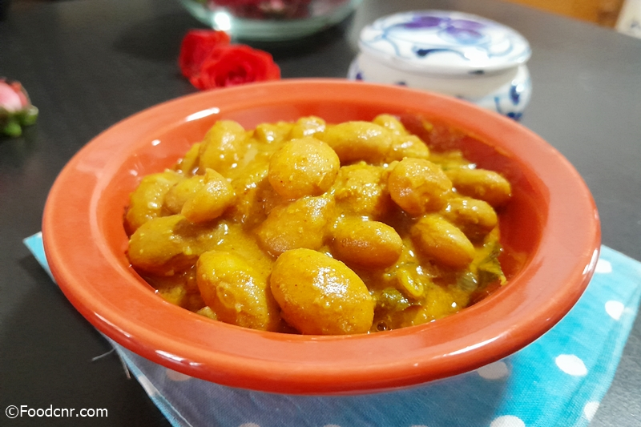

Welcome to the Sri Lanka Cooking Recipes website! Here, you'll discover a treasure trove of culinary delights from the beautiful island of Sri Lanka. Our website is dedicated to showcasing the rich and diverse cuisine of Sri Lanka, offering a wide array of authentic recipes that highlight the flavors, spices, and traditions of this vibrant culture. From aromatic curries to delectable sweets, our collection features traditional dishes that span various regions and influences within Sri Lanka. Whether you're a seasoned cook or just starting your culinary journey, you'll find step-by-step instructions, tips, and tricks to recreate these mouthwatering recipes in your own kitchen. Explore the site to uncover the secrets behind beloved Sri Lankan dishes, learn about unique ingredients, and delve into the cultural significance of each recipe. Whether you're looking for spicy curries, flavorful rice dishes, crispy snacks, or delightful desserts, our website is your gateway to experiencing the authentic flavors of Sri Lanka right in your home. Join us on a culinary adventure as we celebrate the diversity and deliciousness of Sri Lankan cuisine!Sri Lankan Recipes, healthy recipes and cooking tips. Find Sri Lankan food recipes with photos. It is a Food Blog for your family with delicious recipes.
Lima Beans curry
Sri Lankan-style Lima Beans Curry is a flavorful dish made with aromatic spices, coconut milk, and tender lima beans. It's a popular vegetarian option in Sri Lankan cuisine, known for its rich, creamy texture and robust taste.
Karawila Sambola
Karawila sambole is a popular Sri Lankan condiment made from bitter gourd, locally known as karawila. Typically prepared by sautéing finely chopped bitter gourd with ingredients like onions, green chilies, and spices, it offers a unique and flavorful accompaniment to rice and other dishes. The dish is celebrated for its blend of bitter and spicy notes, contributing to the rich culinary tapestry of Sri Lanka.

Create a delicious sausage stir fry by combining savory sausages with an array of vibrant vegetables, all tossed together in a flavorful blend of spices. This quick and easy dish promises a symphony of tastes and textures that will satisfy your taste buds.

Polsambola is a traditional Sri Lankan salad known for its vibrant flavors and simplicity. This refreshing dish typically features a medley of finely chopped vegetables, grated coconut, and a zesty dressing made with lime juice, chili, and spices. Polsambola is not only a delicious accompaniment to many Sri Lankan meals but also a celebration of the island nation's rich culinary heritage.